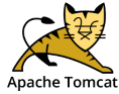
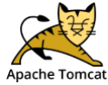

Mini Project02
프로젝트 기획서
×
| 구분 | Data |
|---|---|
| 프로젝트 참여자 | 장하경(PM), 배용우(PL), 강보름, 김지환 |
| 프로젝트 목적 | 여러 카테고리에 관한 뉴스 정보 제공 |
| 프로젝트 설명 | 4차산업혁명이 발전되면서 SNS는 개인을 나타내는 공간이 되었다. 그만큼 인터넷사용자 및 sns사용자가 늘어남에 따라 정보보안의 중요성이 더욱 대두되고있다. 이러한 상황에서 이용자들이 보다 빠르고 정확하게 정보·보안/인터넷·sns에관한 기사를 볼 수 있도록 뉴스플랫폼을 구상하였다 |
| 프로젝트 개발환경 | Front :


Back : 

DB & Server :  

Development Tools : 

Collaboration : 

|
| 기능 담당 |
배용우 - 회원가입, 조회, 탈퇴, 기사 CRUD , adminPage
장하경 - 회원가입, 기사 CRUD 강보름 - 기사댓글 김지환 - 회원 조회, 회원수정 |
개요 : 두번째 프로젝트는 첫 프로젝트보다 수월하게 할 수 있었습니다.
먼저 단계적으로 배워서 이번에는 주제가 뉴스기사에 관한 게시판 만들기로 정해졌습니다.
그리고 PM으로써 말고 PL로써 코드에 조금 더 욕심을 내서 개발을 하게되었습니다.
전체적인 흐름은 뉴스다 보니까 무분별한 기사 등록을 사전에 방지하고자, 기사가 작성을 하면 admin측으로 보내서
admin의 허가가 있어야만 게시판 등록을 하게끔 구현하였습니다.
당연히 거부가 되었을 경우는 거부 사유를 등록된 이메일을 통해 알려주도록 구현하였습니다.
이렇게 구현을 하면 기자들이 무분별한 매크로나, 광고성 기사들을 게시할 수 없게 되므로 의도에 맞춰 개발을 하였습니다.
db분석 : 이번에도 db설계는 회원 정보를 간략화하고, 게시판에 좀더 힘을 실어서 개발하였습니다. 그리고 스프링 시큐리티를 추가함으로써 관련 테이블이 한 개 더 추가되었습니다.
먼저 userInfo에는 간단한 회원 정보 관련된 내용을 담겨져있고, 거기에 따른 권한 관련 테이블을 설계하였습니다. 그리고 소속은 어디있는지 연결을 하였습니다.
그리고 사진에 있다시피 tboard라는 테이블이 있는데 먼저 tboard에 등록을 하고 adminPage에서 tboard 관련된 내용들을 관리하여서 본 리스트페이지(메인)에 게시하도록 설계하였습니다.
또 추가적으로 카테고리를 동적으로 추가할수 있도록 설계하였습니다.